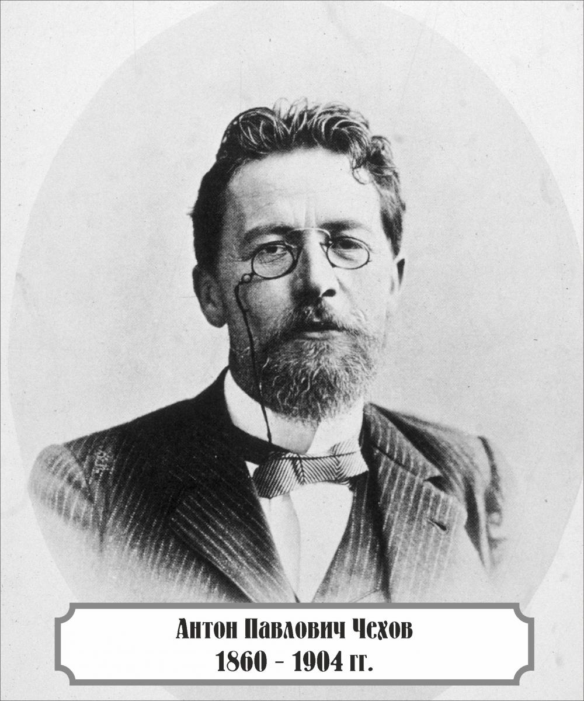
Биография
Антон Чехов родился в большой семье в Таганроге. Его отец, Павел Егорович, сначала гонял продавать быков из Воронежской губернии в Москву, а в 1858 году стал купцом третьей гильдии. В браке с Евгенией Морозовой у них родилось шестеро детей, сам Антон был третьим.
Обстановка в доме Чеховых была строгой: детям не позволяли бездельничать. Ежедневно в пять часов утра братья пели в церковном хоре, а после школы помогали отцу в бакалейной лавке. Все дети должны были изучать ремесло: Антон, например, познавал профессию портного. Мать же учила детей быть отзывчивыми, уважать и поддерживать слабых, любить природу и окружающих.
Учиться будущий писатель начал в 1868 году в таганрогской гимназии. Там он взял литературный псевдоним Чехонте, по прозвищу, которое дал ему один из учителей. В 13 лет Чехов впервые побывал в театре, где шла оперетта французского композитора Жака Оффенбаха «Прекрасная Елена». Именно тогда Чехов полюбил сцену и литературу.
В 1876 году Чехов-старший разорился, и вся семья уехала в Москву. Шестнадцатилетний Антон, завершавший обучение в гимназии, остался один и занимался репетиторством, чтобы заработать себе на жизнь. В эти годы он много читал, писал очерки для гимназических журналов, а журнал «Заика» с короткими зарисовками из таганрогской жизни отправлял братьям в Москву. Тогда же Чехов написал первую пьесу — «Безотцовщина» и водевиль «Недаром курица пела».
В 1879 году Чехов окончил гимназию и уехал из Таганрога в Москву. Там он начал заботиться о семье, обеспечивал близких на скромный доход от литературных публикаций. Дебют Чехова в печати состоялся в декабре того же года: в журнале «Стрекоза» были опубликованы рассказ «Письмо к ученому соседу» и юмореска «Что чаще всего встречается в романах, повестях и т. п.».
В этом же году Чехов поступил на медицинский факультет Московского университета имени И.М. Сеченова. Студент-медик жил у брата Ивана в подмосковном Воскресенске (сегодня город Истра). Там же в 1881 году он познакомился с заведующим Воскресенской земской больницей, доктором Павлом Архангельским. Еще во время учебы Чехов принимал больных, здесь же прошел практику, а после окончания университета остался работать уездным врачом. Летом 1884 года он перешел на должность заведующего звенигородской больницей.
Занятия в университете Антон Чехов совмещал с постоянной литературной работой. В основном он публиковался под псевдонимом Антоша Чехонте, позднее появились «Врач без пациентов», «Дяденька», «Человек без селезенки», «Балдастов», «Антонсон», «Брат моего брата» — всего около пятидесяти.
Чехов печатался в московских юмористических журналах «Будильник», «Зритель», «Осколки», сотрудничал с «Петербургской газетой», газетой «Новое время» и «Русскими ведомостями». В 1882 году писатель завершил работу над первым сборником рассказов «Шалость», но в печать он так и не вышел, вероятно из-за финансовых проблем. Первый сборник Чехова, «Сказки Мельпомены», увидел свет в 1884 году.
К 1885 году Чехов был уже популярным автором малых рассказов. Но в его литературный путь вмешался писатель Дмитрий Григорович, который раскритиковал молодого человека за растрату своего таланта. С таким мнением были согласны многие ведущие авторы и критики тех лет.
Но именно благодаря одному из критиков, издателю Алексею Суворину, Чехов смог раскрыть свой потенциал. В журнале Суворина «Новое время», с которым начал сотрудничать Чехов, авторам платили приличный гонорар, не ограничивали их ни по времени создания работ, ни по количеству слов. Именно в это благоприятное для писателя время вышли одни из его лучших работ: «Панихида», «Враги» , «Агафья», «Кошмар» и другие — и появился чеховский рассказ как новое явление в русской литературе. В «Новом времени» Антон Чехов впервые начал подписывать тексты собственным именем.
Произведения
Иллюстрации к произведениям:
-
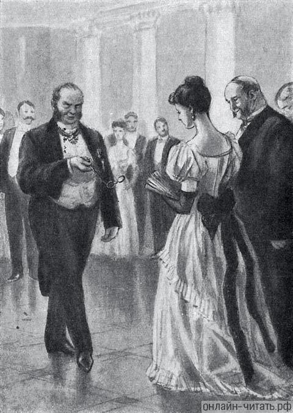
Анна на шее
-
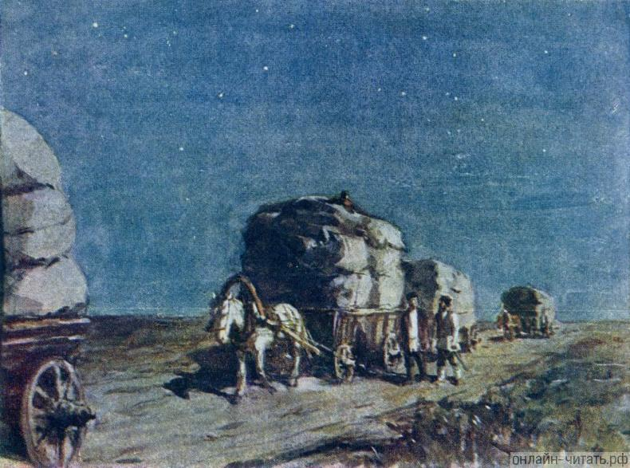
Степь
-
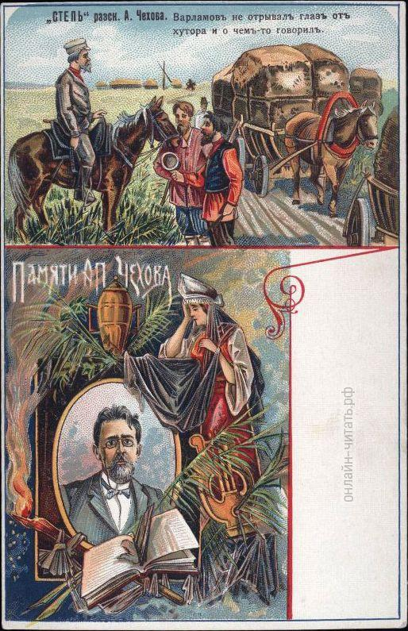
Степь
-
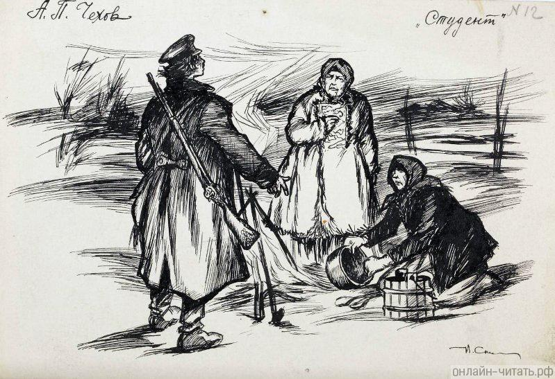
Студент
-
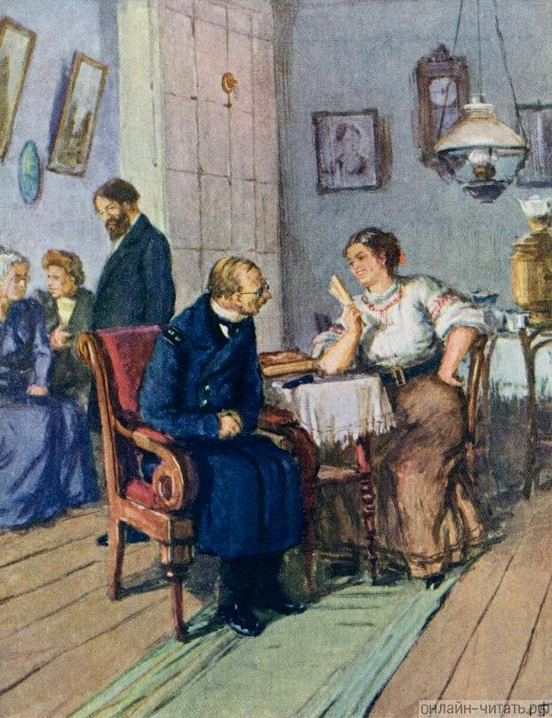
Человек в футляре
-
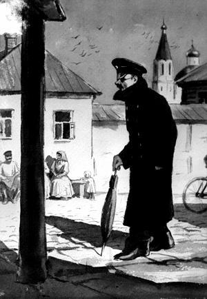
Человек в футляре
Тест на знание А.П. Чехова
Пройти тест«После Москвы я больше всего люблю Таганрог» А.П. Чехов
Теплое Азовское море, богатые степные земли с древних времен привлекали поселенцев. Кочевые племена, греческие колонии охотно заселяли берега Меотиды (так в древности именовали Азовское море) более 2-х тысяч лет тому назад. Об этом упоминает в своих трудах древнегреческий историк Геродот. Самые древние находки датируются 400 тыс. лет до н.э. По последним данным археологов под водой акватории Таганрогского залива находится исчезнувший греческий город Кремны (6-7 века до н.э.). В те далекие времена по представлению эллинов на территории нынешнего Таганрога жили мифические аримасты, гипербореи, грифоны и воинственные амазонки, которые, по рассказам Геродота, избежав греческого плена после поражения в битве при Фермодонте, прибыли к «земле свободных скифов» - к берегам «Меотийского озера – к Кремнам».
Основание Таганрога непосредственно связано с деятельностью Петра I.
Строительство первой военно-морской базы на Азовском море имело огромное значение, т.к. давало России возможность утвердиться в Приазовье и получить выход к южным морям. Кроме того, Таганрог стал одним из первых русских городов, строительство которого велось по регулярному плану, который создавался при непосредственном участии Петра I. Санкт-Петербург, основанный на 5 лет позже нашего города, застраивался по тому же принципу.
Город-крепость Троицкая на Таганьем роге был построен к 1709 году. В этом же году Петр больше месяца находился в Таганроге и лично руководил работами. К сожалению, по условиям Прутского мирного договора с Турцией в 1712 году город был разрушен. Более 50 лет Таганрог пролежал в руинах и вторым своим рождением обязан императрице Екатерине Великой. В 1769 году полуостров вновь был занят русскими войсками, и вошёл в состав России по Кючук-Кайнарджийскому миру 1774 года. Восстановлением крепости и гавани, созданием Азовского флота руководил известный русский адмирал А.Н. Сенявин. После основания Севастополя, Таганрог утратил значение военно-морской базы и с 1780-х годов развивался как крупный внешнеторговый порт. Именно ему принадлежало первенство в установлении экономических связей России с зарубежными странами через южные моря.
С 1802 по 1887 гг. Таганрог был центром градоначальства - в городе находилось 17 иностранных консульств. В 1808 году указом Александра I был утверждён герб Таганрога, - один из первых городских гербов на юге России. Особая страница истории Таганрога XIX века связана с пребыванием в городе императора Александра I. Именно по его разрешению в городе было введено градоначалие, создан Таможенный округ. Император провёл в Таганроге последние месяцы своей жизни и скончался здесь 19 ноября 1825 года. В Таганроге был установлен памятник Александру I работы скульптора И.П. Мартоса, После революции был демонтирован и переплавлен. К 300-летию основания Таганрога памятник был воссоздан и установлен на прежнем месте. На протяжении всего XIX века Таганрог играл значительную роль в развитии южно – русской морской торговли.
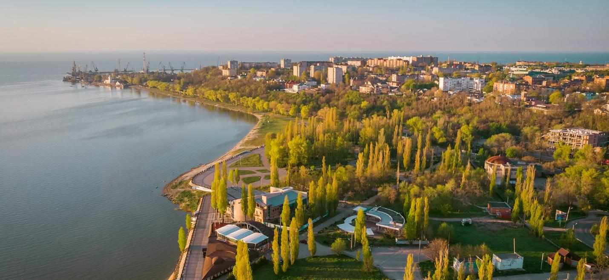
Инициатива А.П. Чехова
Готовясь к 200-летию со дня основания Таганрога, городская Дума приняла решение увековечить память об основателе Таганрога. Инициатива создания памятника Петру I принадлежит нашему великому земляку А.П. Чехову. Памятник был установлен 14 мая 1903 года.
В 19 с половиной лет Чехов покинул Таганрог, но никогда о нем не забывал, его стараниями пополнялась городская библиотека, музей, была открыта первая общественная аптека. Центральная улица города носит имя его основателя, это одна из самых старинных и красивых улиц города.
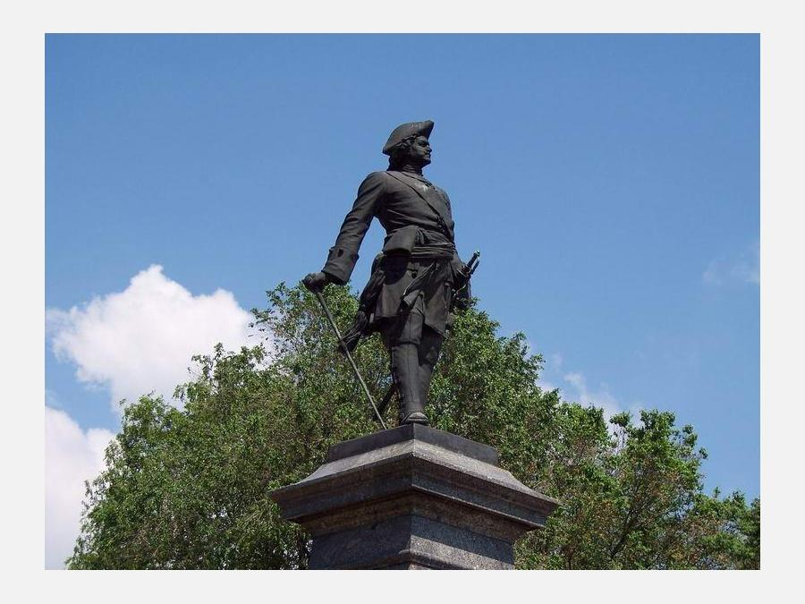
Чехов в Таганроге
В Таганроге есть несколько мест, непосредственно связанных с писателем: Домик Чехова и Лавка Чехова, которые сейчас являются действующими музеями. Сохранилась также гимназия, в которой учился будущий мастер рассказа.
Не лишним будет посетить библиотеку имени А.П. Чехова и театр, и театр, в котором при жизни Чехова, как драматурга, ставились его пьесы. В Таганроге много памятников писателю и скульптурных композиций связанных с его творчеством.
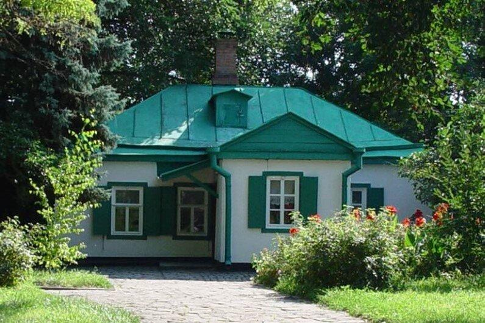
Информационные ресурсы
Христианские мотивы
Они являются одним из художественных приемов, пробуждающих активность читателя Мотив - образ или эпизод и / или совокупность образов и / или эпизодов, встречающиеся более чем в одном тексте.В рассказе “Мечты” христианский мотив — притча о блудном сыне — принадлежит речи повествователя и представляет собой евангельскую реминисценцию, которая развертывается до целого сюжета. В начале рассказа, при представлении героя, повествователь указывает на параллель его образа с образом блудного сына. Затем история героя, представленная в его собственных воспоминаниях и мечтах, поддерживает эту параллель. В “Казаке” (1887), “Спать хочется” (1888) и “Архиерее” (1902) христианские элементы тоже вводятся повествователем, но они доступны и героям, так как являются частью окружающего их мира. Такой способ введения мотивов вполне соответствует установленному у Чехова данного периода творчества объективному повествованию. В рассказах Чехова, в которых христианские элементы доступны чеховскому персонажу, аналогии с библейским героем или библейской ситуацией могут быть обнаружены и самим персонажем. Это приводит героев к новому видению своей ситуации.
Аналогии могут являться результатом веры героя, как в “Казаке”, или болезненного состояния, как в “Спать хочется”, или бреда умирающего, как в “Архиерее”. В большинстве рассказов христианский мотив не только доступен, но и вводится в речь героев. Так это в “Морозе” (1887), “На страстной неделе”5 (1887) “Студенте” (1894), “Рассказе старшего садовника” (1894) и “Крыжовнике” (1898). В случаях, когда христианские элементы, выражающие мотив, являются в речи героев, герои сами осознают сходство ситуации из мирской жизни с библейской, и, кроме того, они еще используют ее в риторических целях. Чем более сознательно и эксплицитно выражен христианский репертуар в речи чеховских героев, тем более усиливается их роль рассказчика, ритора.
В тех рассказах, где эксплицитно выражено, что аналогии осознаются главными героями, они сами выступают рассказчиками. Текст в рассматриваемых рассказах строится так, что, наряду с точкой зрения главного героя, присутствуют еще и другие — читателя, второстепенных героев или новая перспектива развития образа самого главного героя. Таким образом, в рассказах Чехова с христианскими мотивами всегда присутствует полифония (многоголосие). Функция христианского мотива тесно связана с присутствием различных перспектив в тексте, с соотношением разных точек зрения.
При этом использование христианских мотивов тесно связано с краткостью текстов Чехова. Все рассказы, содержащие христианские мотивы в качестве главного мотива, за исключением одного, являются короткими, в 4 —8 страниц. В наиболее длинном рассказе “Архиерей”, благодаря применению христианского мотива, достигнута необычайная для текста такой величины компактность. В начальной сцене произведения расставлена густая сеть христианских элементов, активирующих мотив. На этом держится единство всего текста.
Активирование христианских мотивов создает в чеховских текстах сеть интертекстуальных эквивалентностей — сходств и контрастов, касающихся различных тематических единиц: персонажей, ситуаций и действий. Мотив, таким образом, принимает участие в смыслопорождении. Напомним, например, что случаи сходства ситуаций и персонажей между текстом рассказа и библейской историей об отречении Петра устанавливаются в рассказе “Студент”. Сходства и контрасты между фигурой Христа и героями Чехова вводятся в “Рассказ старшего садовника” и “Архиерей”. Устанавливая интертекстуальные эквивалентности, христианские мотивы создают в текстах не временные или причинные смысловые связи, а ассоциативные по сходству и контрасту.
Задание
Прочитайте рассказы “Казак” (1887), “Спать хочется” (1888) и “Архиерей” (1902) Какие христианские мотивы встречаются в этих рассказах? Запишите слова, связанные с христианским мотивом. Можно ли назвать эти рассказы святочнымиКакие признаки святочного рассказа вы нашли, выпишете. Придумайте альтернативу любого из представленных рассказов (на выбор), убрав из них христианские мотивы. Ответьте на вопросы:
- Cохранился ли смысл рассказа?
- Остался ли он таким же емким?
- В чем же основная цель христианского мотива?
Литература на сцене
«Театр мне давал когда-то много хорошего… Прежде для меня не было большего наслаждения, как сидеть в театре»Имя Чехова-драматурга неразрывно связано с Московским Художественным театром, который первый дал подлинную сценическую жизнь его пьесам. Правда, и до возникновения Художественного театра пьесы Чехова ставились на сценах Москвы, Петербурга и провинции. За исполнение ролей в них брались талантливейшие русские актеры. 19 ноября 1887 года в Москве, в русском драматическом театре Корша состоялась премьера спектакля по пьесе Антона Павловича Чехова «Иванов». Первый театральный опыт очень сильно повлиял на отношение писателя к театру.
-
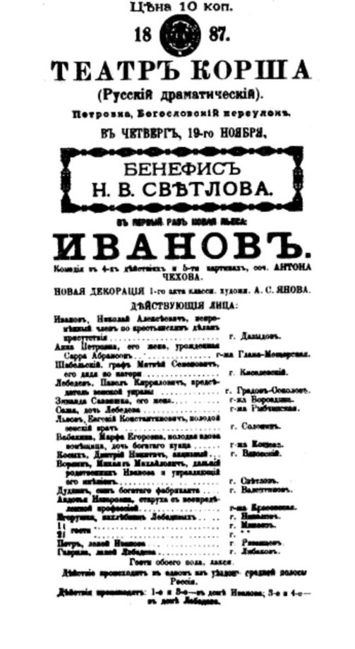
-
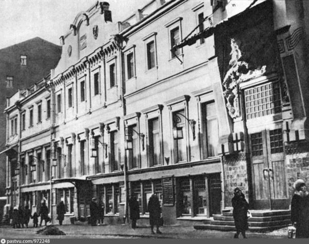
МХТ
Вернемся к МХТ
Театр был создан в 1898 году Константином Сергеевичем Станиславским и Владимиром Ивановичем Немировичем-Данченко. Первое его название - Художественно-общедоступный театр, в 1901 году оно сменилось на Московский Художественный театр (МХТ), а с 1919 года театр носит имя Московский Художественный академический театр, к которому в 1932 году добавилось окончание «СССР им. М. Горького».
Премьера «Чайки» состоялась 16 декабря 1898 года. Уверенности в успехе не было ни у кого, публика могла не принять нового спектакля. Вся труппа испытывала неимоверное волнение и тревогу, осознавая степень ответственности перед автором и будущим своего театра. Когда спектакль закончился, на исполнителей обрушился град аплодисментов и оваций, публика не давала опустить занавес, а актеры плакали от счастья и обнимались прямо на сцене! В зрительном зале слышались взволнованные голоса, кто-то требовал послать телеграмму Чехову в Ялту. Как сказала потом Ольга Книппер-Чехова: «И "Чайка", и Чехов-драматург были реабилитированы!».
Спектакль имел небывалый успех. Критики были восхищены не меньше зрителей и признали, что спектакль поражает своей новизной, отсутствием шаблонов и великолепным актерским ансамблем. Детали здесь были воспроизведены так же подробно и точно, как в «Царе Федоре», но тут уже никто не упрекал постановщиков в утрированной внешней правде. «Это совершенно новая пьеса, по-новому задуманная, написанная и исполненная как раз в том тоне, в каком автору желательно», — писали московские газеты. Стало очевидно, что МХАТ нашел своего Автора и вышел на новый уровень, заняв одно из первых мест в русском театральном искусстве рубежа веков. Именно в чеховских спектаклях произошло открытие театральной системы, определившей театр XX века, пришло новое понимание сценической правды, поворачивающее внимание актера и режиссера от внешнего реализма к внутреннему, к проявлениям жизни человеческого духа.
МХТ впервые в истории мирового театра утвердил значение режиссера как автора спектакля, интерпретирующего пьесу в соответствии со спецификой своего творческого видения. Рождение Московского Художественного Академического театра неразрывно связано не только с «Чайкой» (хотя, безусловно, «Чайка» – это визитная карточка МХАТа), но и со всей драматургией Чехова в общем. В последующие годы театр осуществил и другие постановки по пьесам автора: «Дядя Ваня» в 1899 году, где Станиславский блистал в роли Астрова. Спектакль не сразу был принят публикой, однако впоследствии стал одним из «козырей» театра. «Три сестры» — самая пронзительная пьеса Чехова. Поставлена она была в 1901 году, когда из названия театра уже убрали слово «общедоступный». «Вишневый сад», который играли уже не в помещении театра «Эрмитаж», а в новом здании — в Камергерском переулке. Именно в спектаклях по пьесам Чехова начинала рождаться театральная система, которая и формировала совершенно новый тип актеров. МХАТ утвердил значение режиссера как автора спектакля, произвел реформу репертуара, ища для постановок произведения, созвучные времени. Но, работая с «модной» драматургией и не обходя вниманием символизм в русском театре, МХАТ никогда не забывал о классике
Посмотреть первувю часть спектакляЗадание
Прочитайте и посмотрите пьесу «Чайка». Составьте сравнительную таблицу (пример далее). Выпишите описание героев, сходство и отличие текста от постановки.| Герой | Текст | Постановка | Отличие |
|---|---|---|---|
Моя Третьяковка
Посетим с вами галерею иллюстраций к произведениям А.П. Чехова-
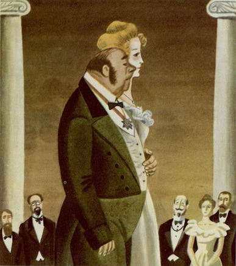
«Анна на шее» С.А. Алимов
-
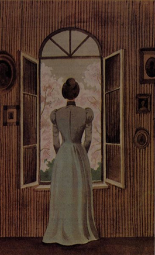
«Вишневый сад» С.А. Алимов
-
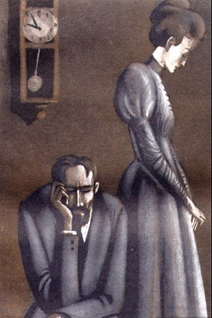
«Дама с собачкой» С.А. Алимов
-
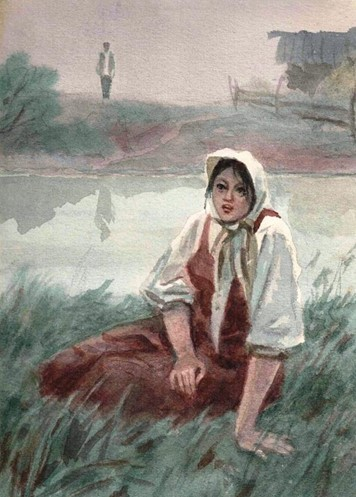
«Агафья» В.Ф. Васильев
-
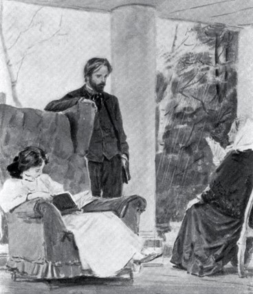
«Дом с мезонином» Д.А. Дубинский
Задание
Проанализировать картины галереи- Какими художники изображают женщин произведений А.П. Чехова? В чем их сходство и различие?
- Какая роль мужчины изображена на этих иллюстрациях?
- Составьте общий образ женщины А.П. Чехова, используйте чат GPT для создания её портрета.
- Работы (изображение с описанием) выгрузите в общую папку с домашним заданием.